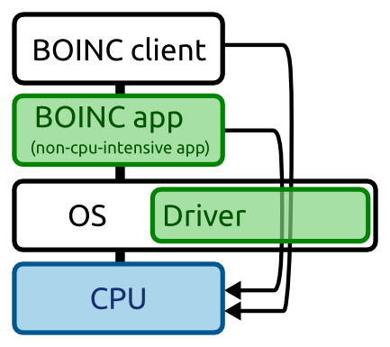

Volunteer computing applications generally run when the PC owner is away from his desk and the machine is idle. We believe that a higher efficiency, in terms of computation performed per unit of energy consumed, when the computation is executed when the user is working on the machine. After all, even when you are working intensively, the usage of the CPU rarely goes over 20% of its capacities.
To run the computation in the background, a number of precautions have to be taken, though. In particular, the BOINC application must avoid putting the machine in a high-performance mode. Because the application is CPU-intensive, a high-performance mode is normally a good idea if you ignore the energy consumption. The performance mode of your machine is selected by the operating system. Unfortunately, there currently exists no means for an application to dictate its CPU performance mode. So that is why we investigated in ways to work around this.
We developed a Windows driver to help monitor and control the energy consumption of Desktop Grids. The role of the driver is twofold: To obtain detailed information about the CPU's performance states (P-state) on Windows, To give individual application control over the CPU's P-state when they are executing. The active P-state is normally managed by the operating system. Using this driver, applications can by-pass the OS and can talk to the CPU's P-state mechanism directly.

To communicate the requested P-state to the CPU requires writing hardware specific bit patterns to special addresses. The information about these addresses, the bit patterns, and which method to use to read/write the data is extracted from the hardware description provided by the ACPI sub-system.
The development of the Windows driver is severely hampered by the lack of Microsoft's documentation on its ACPI interface, the appropriate position where to insert the driver into the Windows driver stack, and the Windows kernel API in general. After much effort, we managed to develop a driver that inserts itself on top of the CPU driver. This allows the driver to obtain the required information from the ACPI sub-system.
The driver further creates a special file handle through which user-space applications can communicate. The driver also creates a kernel thread that periodically attaches to each CPU in the system. For each CPU, it collects data about the current values of the P-state. Applications can read the statistics gathered by the driver. This information is formatted similarly to the data obtained on the Linux kernel: the amount of time each CPU has spent in each P-state since the start of the system. Applications can also request the driver to maintain the P-state of a specific CPU at a specific value. The driver will then periodically check the current P-state and override any values that do not correspond to the requested value. Because the update period of the driver is higher than that of the Windows OS, the performance state can is nearly continuously kept at the requested value.
The installation of the driver requires administrator privileges on the target machine.
A compact user-space application has been developed to interact with the driver. The API is as follows: